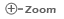

- Move the mouse pointer into the "Categories" tab in the menu bar in Admin Console Window.
- Click on "Category List" tab. "Browse Categories" tree will display in the left side. You can list down subcategories by clicking on a category.
- If there are subcategories in the selected category, Category List will appear. Following columns are available in the Category List.
- Row Number
- Name of the Category (There is an image with zoom icon for corresponding filed. By clicking on the , you can see the enlarge image. This will appear only for third level categories.)
- Description of the Category
- Add, Edit and Delete icons
By clicking on the , can add subcategories. If you click on that icon, you can appear corresponding "Add New Category" window. This icon is deactivate for third level categories. ()
By clicking on the , can edit Category details. At there you can edit,
- Category Name
- Image (This field is display only for second level.)
- Category Description
- Category Status
After edit data, click on the "Edit" button.
By clicking on the , can delete categories. Once you click on that icon, you will be prompted to confirm the deletion.
Click on the "OK" button to confirm the deletion. If Specifications are available under selected Category, you cannot delete it.
|